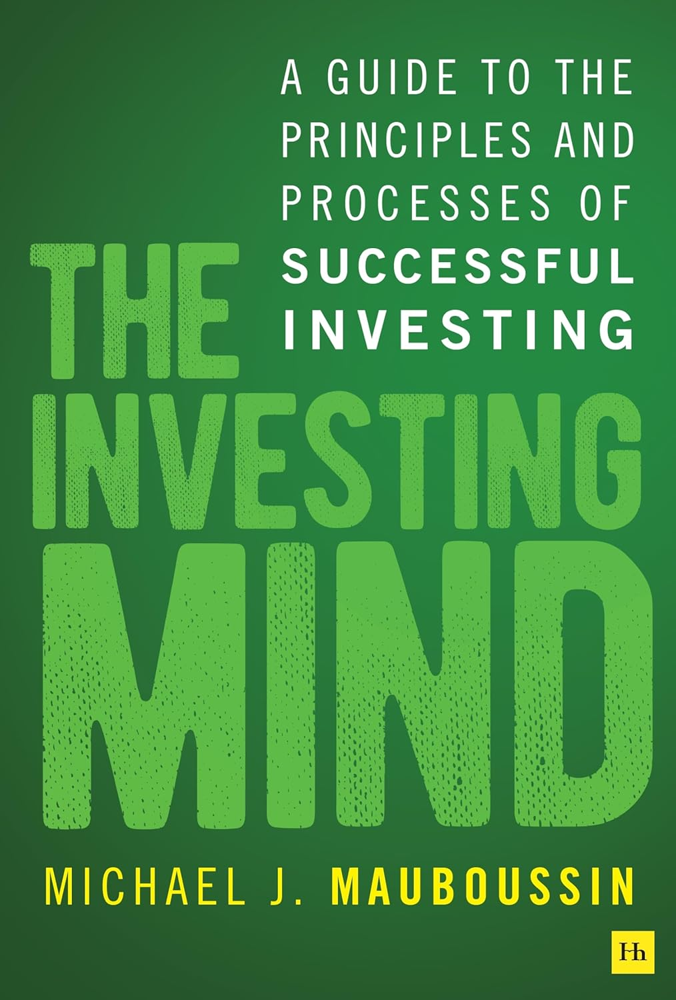

这是迈克尔·莫布森（Michael J. Mauboussin）的最新作品，由英国哈里曼出版社（Harriman House）于2026年推出。写作此书时，他是摩根士丹利投资管理旗下Counterpoint Global团队的"融通研究"（Consilient Research）主管，此前四十年在华尔街做策略分析，并在哥伦比亚商学院讲授投资分析逾三十年。全书的主张浓缩成一句话——"不是教你想什么，而是教你如何想得好"（Not what to think. How to think well.），莫布森从中提炼出区分卓越投资者与普通人的十项核心特质。
这十项特质分为两类。一类是可操作的硬能力：数量素养（numeracy），即读懂数字、看穿百分比与基率背后含义的能力；资本配置，即在不同机会间分配资金的判断；以及风险与回报的权衡。另一类是行为层面的软品质：评估企业战略的眼光、认清自身认知偏差的诚实，以及保持开放心态、愿意在证据变化时修改结论的意愿。贯穿其中的是两个他反复强调的思维工具——概率式思考，即在结果本就不确定的世界里学会用分布而非单点去推理；以及"跟什么比？"（Compared to what?）的比较意识，任何判断只有放进恰当的参照系里才有意义。他还提醒投资者认清自己的能力圈，扬长避短，避开并不适合自己的打法。
熟悉莫布森的读者会发现，这本书是他此前一系列著作的收束与提炼——《预期投资》（Expectations Investing）、《魔鬼投资学》（More Than You Know）、《再想一想》（Think Twice）与《成功方程式》（The Success Equation）中散布的方法，在这里被整理成一套关于"如何思考"的框架。书末列出的六百余条参考文献，横跨金融、心理学与行为经济学，正是他"融通"式治学的一贯做派：把不同学科的证据编织进投资决策。作为一本2026年才面世的新书，它尚未积累起大量第三方评论，读者不妨把它当作莫布森数十年思考的一次总结来读。
它面向的其实不只是职业投资者，而是所有需要在不确定中做决策的人。莫布森的一贯立场是：市场短期由噪声主导，技巧要在足够长的时间里才显露出来，因此与其追逐某个具体的判断"对不对"，不如打磨那套反复产出好判断的心智流程。这本书把这套流程拆解成可以逐条自省的清单，让读者得以检查自己在数字、偏差与参照系上究竟栽在了哪一环。